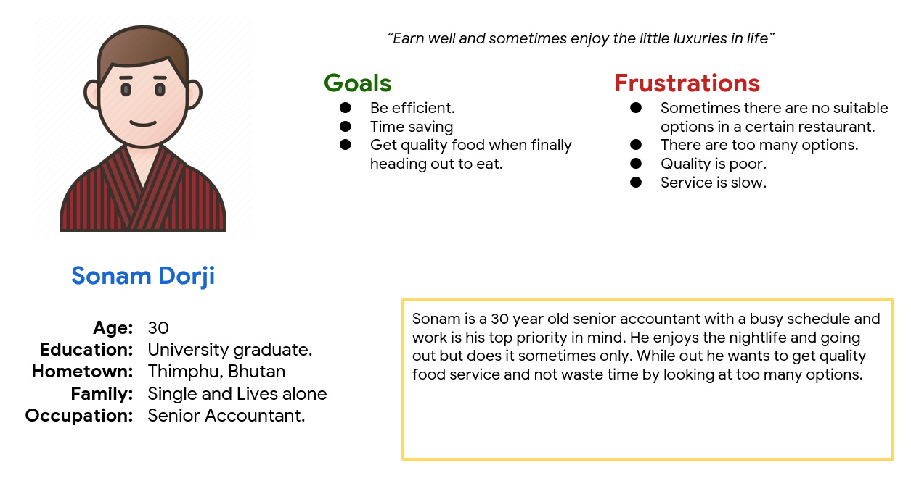
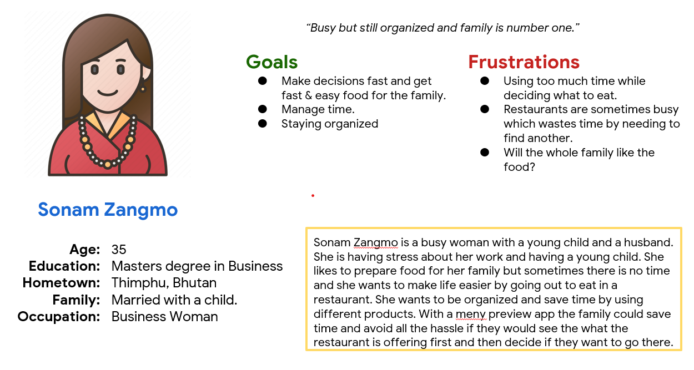
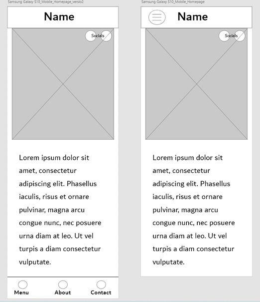

User Research
Pain Points
The pain points that i have found are
- With tight schedule they need to make time optimization.
- Want quality sushi and no disappointments.
- Design a minimal style user interface
Taste of Japan is a sushi restaurant(imaginary) located in Thimphu, Bhutan. The restaurant and this webpage is for busy people living in the city who want high-guality sushi.
Busy workers lack the time to search restaurants and prepare meal at home sometimes
Role: UX designer leading the app design from conception to delivery.
Responsibilities:Research,wireframing(paper&digital), prototyping, conducting usability studies, accounting the accessibility and iterating on designs.
Design a webpage that allows users easily check the detailed menu and decide whether to go straight to the restaurant.
The pain points that i have found are
 
Sitemap was pretty simple and straightforward. Only needed info available easily and quickly.
Made four paper wireframes and selected eventually the best parts to the digital wireframes keeping users in my mind.
Here are paper wireframes for different screens(desktop, tablet and mobile). Responsiveness is the key because there are so many devices available nowdays.
Here is the homepage. Aim was to design clear and simple wireframes.
Here are two wireframes for mobile view.
To prepare for usability testing, I created a low-fidelity prototype which included the main user flow of the app.
These usability studies were essential for understanding how real users experience and perceive my designs. The research findings helped me to iterate and improve my design to meet users' needs.
Conducted usability study and added points that were mentioned into the design.
The high-fidelity prototype followed the same user flow as the low-fidelity prototype.
To make the app more accessible I:
Impact
What I learned?
Moving forward, I will: